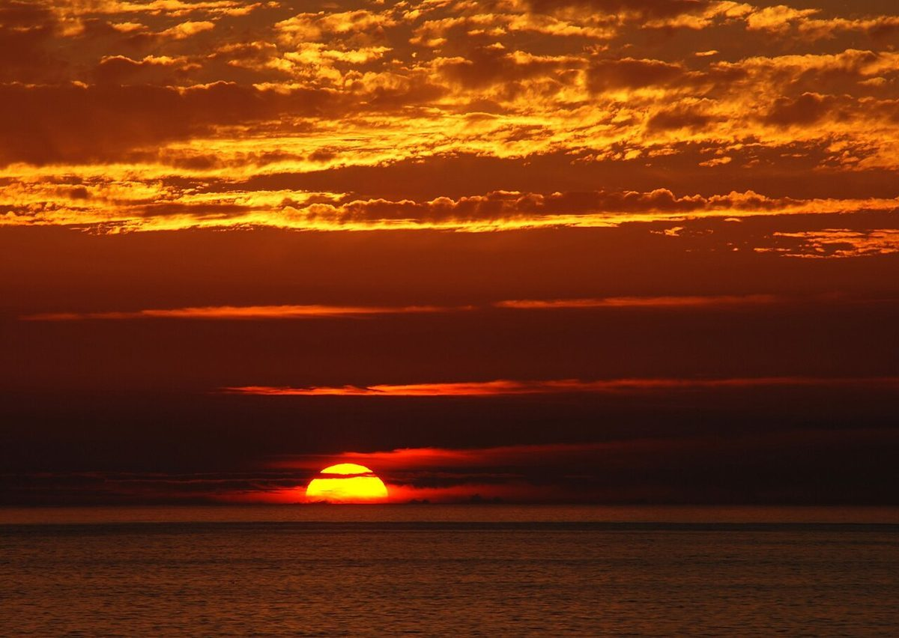
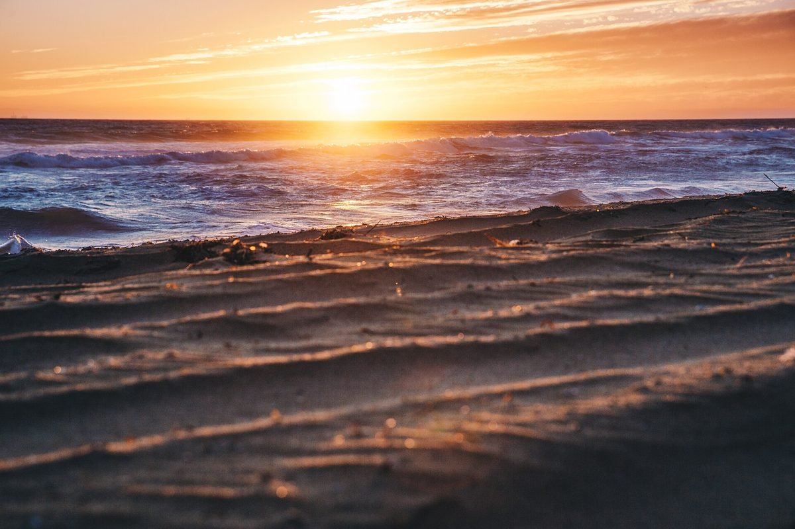

朝刊
朝のほうを、ひらく。
長野県上水内郡飯綱町の「パンと本の店 朝と夕」のご案内ページです。営業時間やメニューなど詳しいことは準備中。まずは下のInstagramをのぞいてみてください。

朝刊
長野県上水内郡飯綱町の「パンと本の店 朝と夕」のご案内ページです。営業時間やメニューなど詳しいことは準備中。まずは下のInstagramをのぞいてみてください。
夕刊
屋号の「朝と夕」から、このページは新聞のように「朝刊」と「夕刊」の二部制にしてみました。写真はどれも国外・撮影地不明のイメージです。

制作側の連想
店名の由来は分かりません。制作側は「朝」と「夕」の二文字から、一日に二度届く新聞、朝刊と夕刊を連想しました。「パンと本の店」という屋号の「本」からの連想でもあります。この紙面づくりは制作側の連想で、お店の理念・由来とは無関係です。
朝刊の紙面(イメージ)
お店の商品ではありません。国外・撮影地不明のフリー素材です。


夕刊の紙面(イメージ)
お店の店内ではありません。国外・撮影地不明のフリー素材です。



ご案内(確認できたものだけ)
| 所在地 | 〒389-1206 長野県上水内郡飯綱町普光寺441-1 |
|---|---|
| 電話 | なし |
| 営業時間 | 準備中 |
| 定休日 | 準備中 |
| ご予約 | 準備中 |
| 駐車場 | 準備中 |
| SNS | Instagram @asa_to_yu |